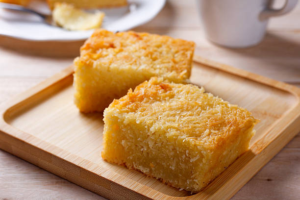

Home
Cassava Cake

Description
Cassava cake is a classic, traditional Filipino baked dessert made from grated cassava root, coconut milk,
and condensed milk, usually finished with a rich, creamy custard layer on top
Ingredients
- 2 cups grated, peeled cassava
- 1 can coconut milk
- 1 can sweetened condensed milk
- 1 can evaporated milk
- 2 large eggs;beaten
Steps
- Gather all ingredients. Preheat the oven to 350 degrees F (175 degrees C).
- Stir cassava, coconut milk, condensed milk, evaporated milk, and eggs together in a bowl until thoroughly combined
- Pour into a 2-quart baking dish
- Bake in the preheated oven until set, about 1 hour. Turn the broiler on and bake until top of cake is browned,
2-3 mintues.Cool completely in the refrigerator before serving, about 1 hour